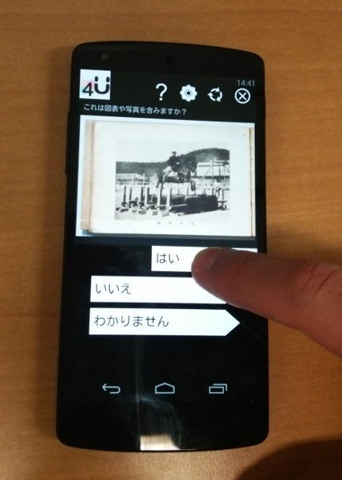

クラウドソーシングの科学を発展させるための実験設備を提供します。
Crowd4Uの内部はブラックボックスではありませんので、研究者はプラットフォームレベルで実装が必要な実験を行うことができます。現在、Crowd4Uを利用して行われている研究トピックの例としては次のようなものがあります。
-
クラウドソーシングの抽象化と言語：Crowd4UはCyLogと呼ばれる、人と計算機の知の融合を記述するために設計されたDatalog風の言語を実行することができます。CyLogは簡潔な言語です。例えば、CrowdHealthプロジェクトのためのコードはたった2行のルールで記述されています(これ以外に、スキーマ記述とHTMLで記載されたタスクテンプレートが必要です)：
HealthRelated(tid, result)/open[_all] <- Tweet(tid, text);
!Task1(_open_fact_id, tid, text) <- ?HealthRelated(_fact_id:_open_fact_id, tid ), Tweet(tid, text); - 複雑なクラウドソーシング - 異なる種類のタスクを組み合わせて大きな問題を解決する(例：5つのタスクを組み合わせて竜巻の経路推定を行う。他のタスクの文章を動的に翻訳する別タスクや、他の人のタスク結果を利用する協調タスクを用意する)
- タスク割り当ての際の効果的なタスク順序の決定
-
ワーカリクルーティングの戦略とインセンティブ構造：Crowd4Uは数多くのワーカリクルーティング戦略とインセンティブ構造を実装しています。その中には、歩きながらタスクができるシステムや、Androidスマートフォンのためのスクリーンアンロックシステムも含まれています。また、明治大学中村聡史先生開発による音楽ゲームでマイクロタスクを行うシステムもあります。

- データ品質
- ワーカ選択
- 迅速な開発の支援
")